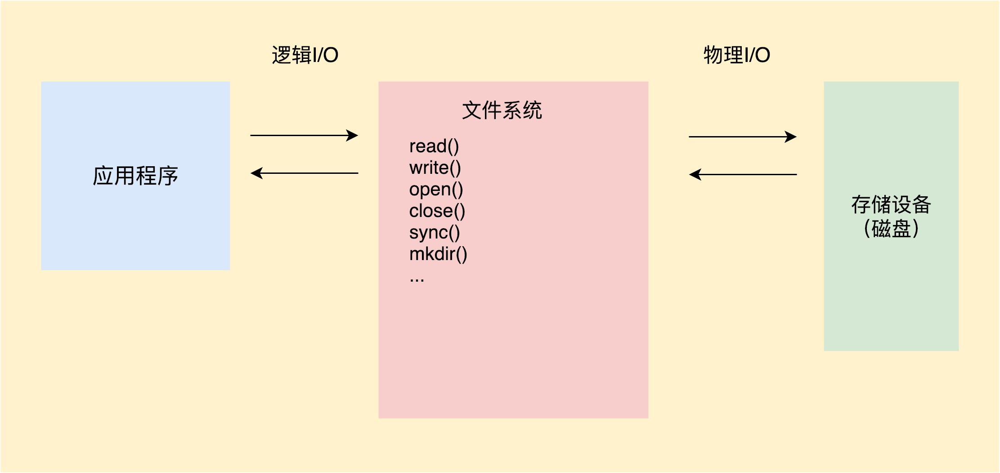

参考文章
- 作者：yorek
来源：个人博客
著作权归作者所有。商业转载请联系作者获得授权，非商业转载请注明出处。
背景
以前对读写的操作更多这块是基于业务去做开发，最近我们的游戏遇到一个问题，升级了Unity版本后，游戏相关的场景出现了卡顿，游戏加载资源场景和相关战斗场景出现了卡顿，通过我们对游戏业务深度的剖析，最后发现了卡顿的问题部分是IO的问题。所以我打算对这块知识好好学习一下。
IO的基本知识

你可以看到整个文件 I/O 操作由应用程序、文件系统和磁盘共同完成。首先应用程序将 I/O 命令发送给文件系统，然后文件系统会在合适的时机把 I/O 操作发给磁盘。
这就好比 CPU、内存、磁盘三个小伙伴一起完成接力跑，最终跑完的时间很大程度上取决于最慢的小伙伴。我们知道，CPU 和内存相比磁盘是高速设备，整个流程的瓶颈在于磁盘 I/O 的性能。所以很多时候，文件系统性能比磁盘性能更加重要，为了降低磁盘对应用程序的影响，文件系统需要通过各种各样的手段进行优化。那么接下来，我们首先来看文件系统。
Linux 文件系统
对于 Android 来说，现在普遍使用的是 Linux 常用的 ext4 文件系统。
F2FS 系统应该是未来 Android 的主流文件系统。
回到文件系统的 I/O。应用程序调用 read() 方法，系统会通过中断从用户空间进入内核处理流程，然后经过 VFS（Virtual File System，虚拟文件系统）、具体文件系统、页缓存 Page Cache。下面是 Linux 一个通用的 I/O 架构模型。

虚拟文件系统（VFS）。它主要用于实现屏蔽具体的文件系统，为应用程序的操作提供一个统一的接口。这样保证就算厂商把文件系统从 ext4 切换到 F2FS，应用程序也不用做任何修改。
文件系统（File System）。ext4、F2FS 都是具体文件系统实现，文件元数据如何组织、目录和索引结构如何设计、怎么分配和清理数据，这些都是设计一个文件系统必须要考虑的。每个文件系统都有适合自己的应用场景，我们不能说 F2FS 就一定比 ext4 要好。F2FS 在连续读取大文件上并没有优势，而且会占用更大的空间。只是对一般应用程序来说，随机 I/O 会更加频繁，特别是在启动的场景。你可以在 /proc/filesystems 看到系统可以识别的所有文件系统的列表。
页缓存（Page Cache）。在启动优化中我已经讲过 Page Cache 这个概念了，在读文件的时候会，先看它是不是已经在 Page Cache 中，如果命中就不会去读取磁盘。在 Linux 2.4.10 之前还有一个单独的 Buffer Cache，后来它也合并到 Page Cache 中的 Buffer Page 了。
Page Cache 就像是我们经常使用的数据缓存，是文件系统对数据的缓存，目的是提升内存命中率。Buffer Cache 就像我们经常使用的 BufferInputStream，是磁盘对数据的缓存，目的是合并部分文件系统的 I/O 请求、降低磁盘 I/O 的次数。需要注意的是，它们既会用在读请求中，也会用到写请求中。
通过 /proc/meminfo 文件可以查看缓存的内存占用情况，当手机内存不足的时候，系统会回收它们的内存，这样整体 I/O 的性能就会有所降低。
1 | MemTotal: 2866492 kB |
磁盘
IO优化
磁盘 I/O 是启动优化一定要抠的点。首先我们要清楚启动过程读了什么文件、多少个字节、Buffer 是多大、使用了多长时间、在什么线程等一系列信息。不仅仅是简单读写的问题。
IO优化的事项
启动过程不建议出现网络 I/O